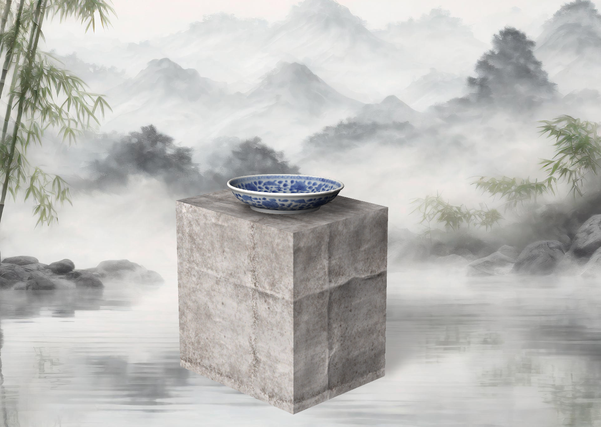
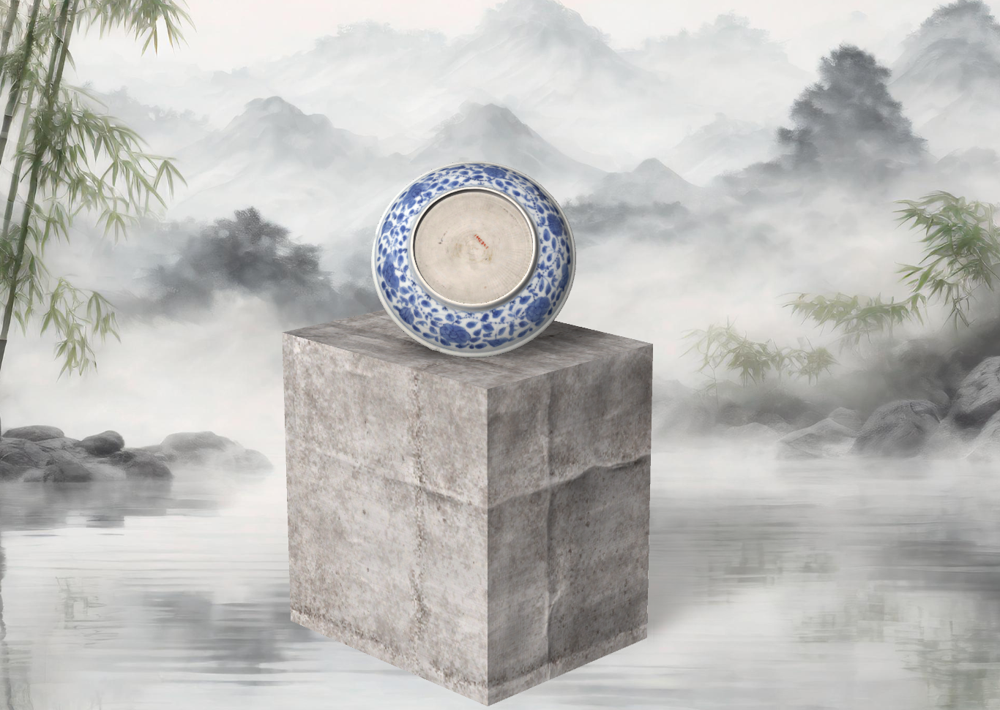
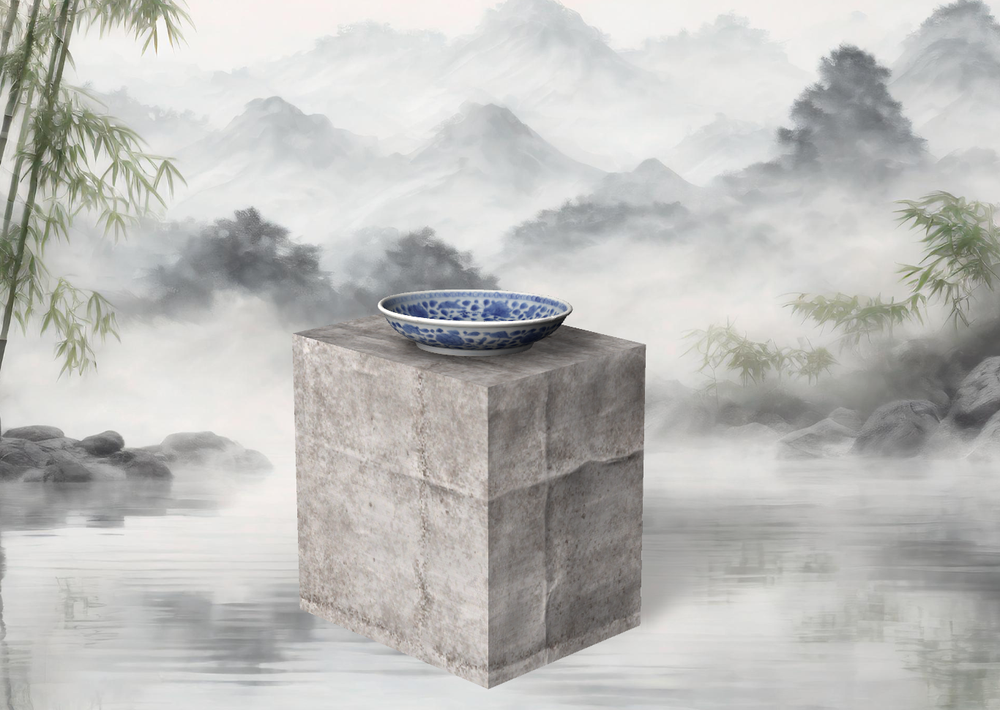
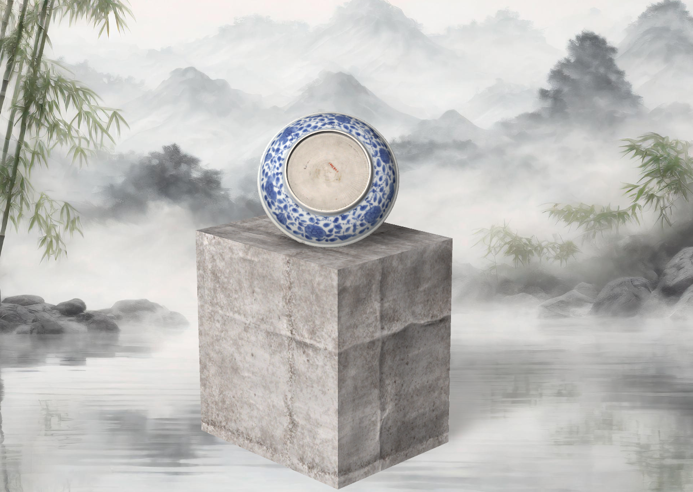
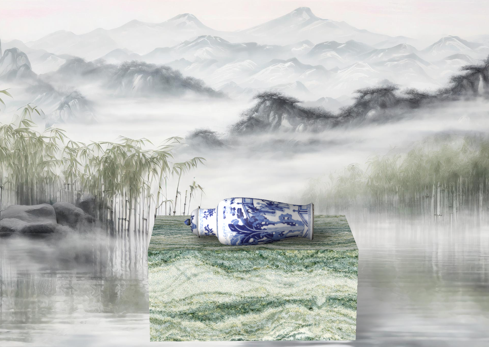
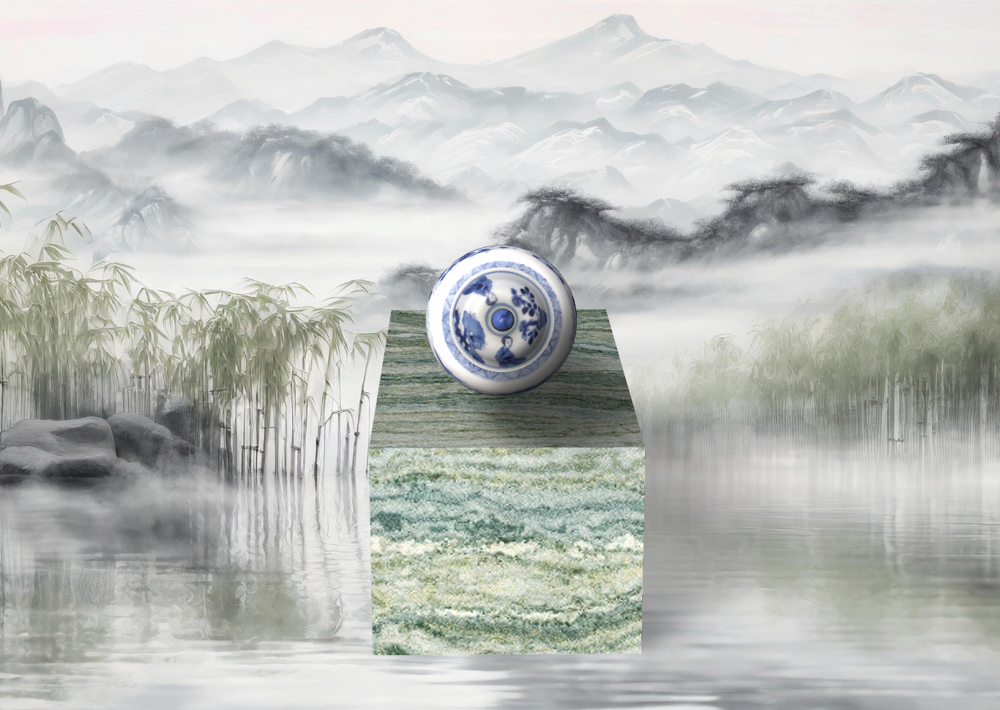
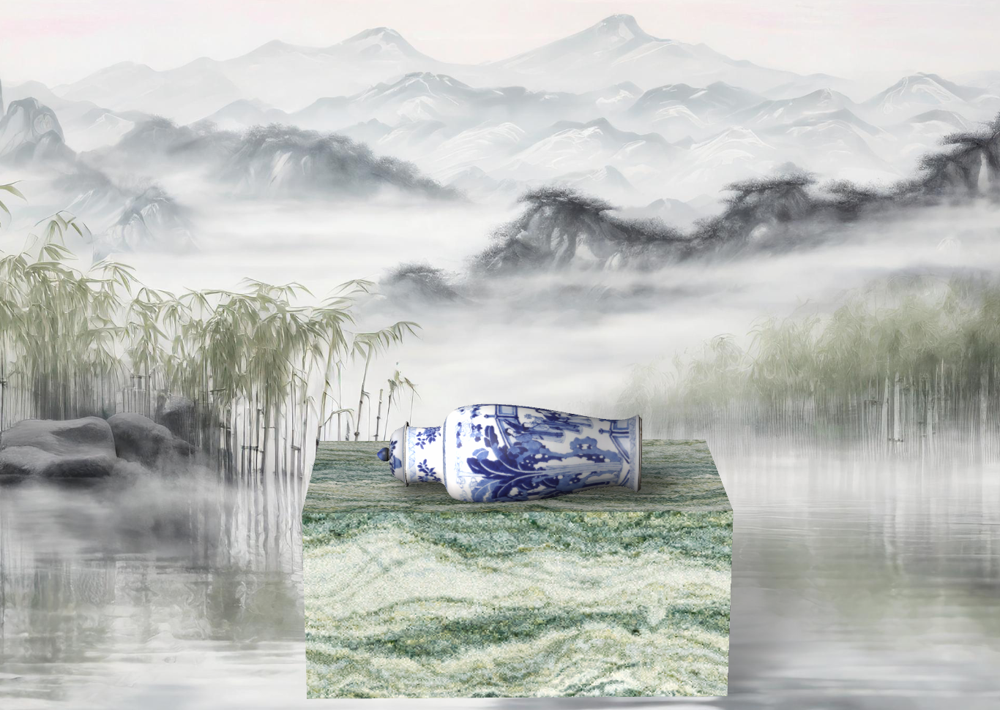
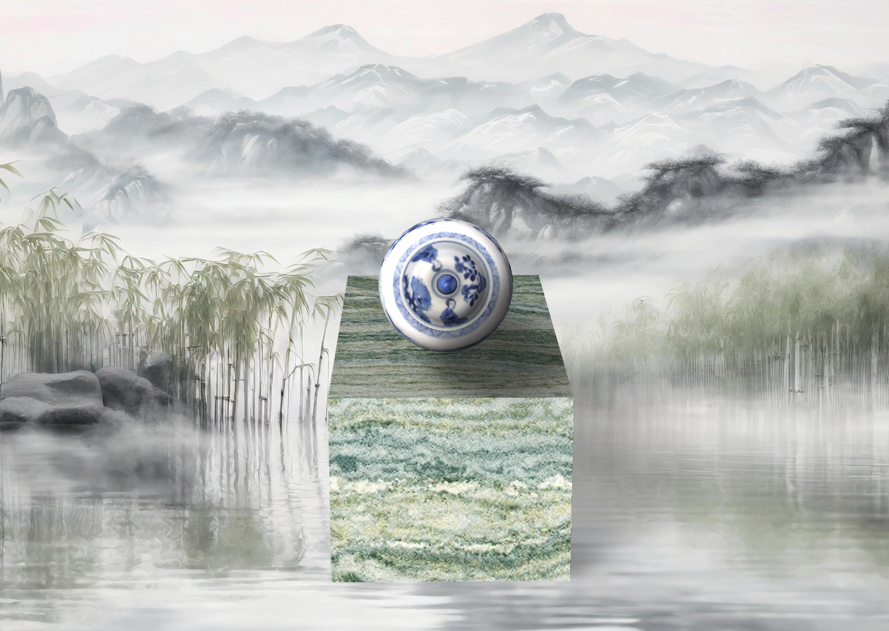

Dragonss, Flowers, and Landscapes in Blue-and-White Porcelain
Chinese blue-and-white porcelain is more than art
— it’s a language of symbols that speaks of power, harmony, and timeless
beauty.
This exquisite baluster vase is one of three in a five-piece garniture, crafted during the Qing dynasty. The white porcelain vase features a clear, feldspathic glaze and intricate decorations painted in underglaze cobalt blue. The design includes a lively court scene with a lady entertained by dancers and musicians, complemented by floral sprays on the neck and domed cover. The elegant bud-shaped finial knob adds a touch of sophistication to this masterpiece, which reflects the artistic traditions of Jingdezhen ware.
 



This elegant dish is one of a pair originating from the late 17th to early 18th century during the Qing dynasty. It features a shallow center, a thick rim, and a deep ring base, showcasing stylized floral designs painted in dark cobalt blue glaze. The dish’s simple yet sophisticated aesthetics highlight the mastery of Jingdezhen artisans in combining functionality with artistic beauty.
 



This beaker-shaped vase, part of a five-piece garniture, exemplifies the artistic excellence of Qing dynasty porcelain. The vase is divided into sections by herringbone borders and adorned with court scenes, including ladies in a garden setting. The flaring neck and middle sections boast detailed cobalt blue underglaze paintings that convey a sense of grace and cultural richness.